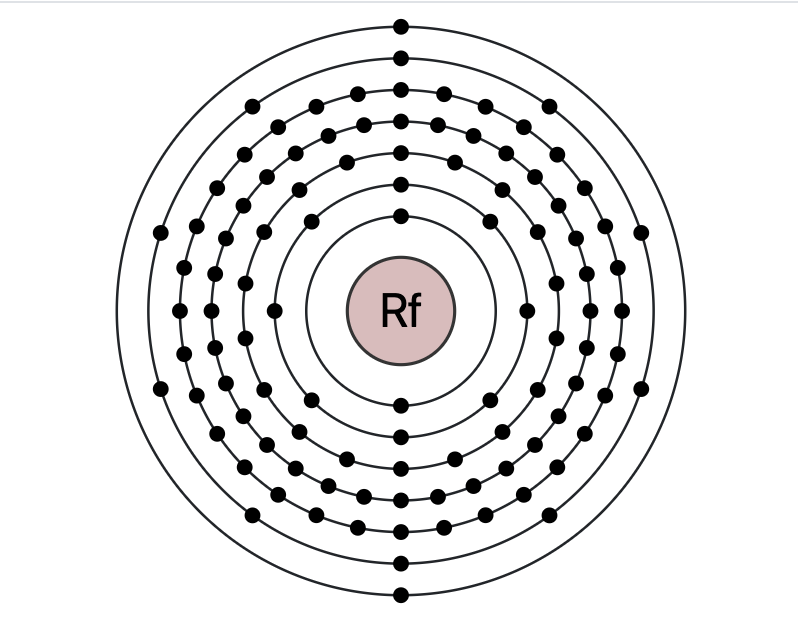

Atomic Number 104 | Synthetic and Highly Unstable Element

Overview
Rutherfordium is a chemical element with the symbol Rf and atomic number 104.
It is a synthetic element and does not occur naturally. Rutherfordium is highly unstable,
with its most stable isotope, Rf-267, having a half-life of approximately 1.3 hours.
Rutherfordium was first reported in 1964 by a team of Soviet scientists at the Joint Institute for Nuclear Research.
Its name honors the renowned physicist Ernest Rutherford, who is often regarded as the father of nuclear physics.
Properties & Uses
Atomic Number: 104
Atomic Mass: [267] u (most stable isotope)
Electron Configuration: [Rn] 5f14 6d2 7s2
Group / Block: 4 (d-block)
Standard State: Solid (predicted)
Melting Point: Unknown
Boiling Point: Unknown
Radioactive: Yes
Due to its instability and short half-life, rutherfordium has no practical applications outside of scientific research.
Studies on rutherfordium focus on its chemical properties and behavior in relation to other group 4 elements.
Rutherfordium in Action
This video provides an overview of rutherfordium, its properties, and its significance in the field of nuclear science.
Historical Perspective
Rutherfordium was independently discovered by Soviet and American scientists in the 1960s. The element was initially referred to as "kurchatovium"
by the Soviets, while the Americans called it "rutherfordium." The International Union of Pure and Applied Chemistry (IUPAC)
officially adopted the name rutherfordium in 1997, honoring Ernest Rutherford’s contributions to nuclear science.
As a synthetic element, rutherfordium continues to be studied for its nuclear and chemical properties,
providing insights into the behavior of superheavy elements.